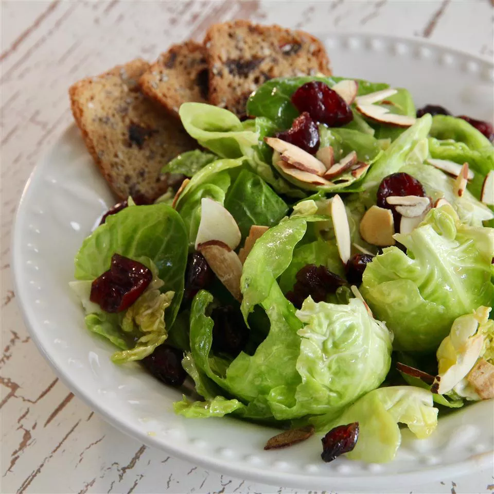

Salad

This is my go-to unexpected side for Thanksgiving and other pot-lucks. Aside from being gorgeous, it holds up well when made ahead, tastes great at room temp, and appeals to lots of eaters because it's vegan, paleo, gluten-free, and low-carb friendly. The only thing that takes time is deconstructing the Brussels sprouts. The salad keeps in the refrigerator for up to 3 days.
ingredients
- 2 pounds Brussels sprouts, trimmed
- ¼ cup maple syrup
- 2 tablespoons extra-virgin olive oil
- 4 teaspoons Dijon mustard
- 4 teaspoons apple cider vinegar
- 1 cup sweetened dried cranberries
- 1 cup cinnamon-roasted almonds
Steps
- Cut cores out of Brussels sprouts using a paring knife. Peel layers apart to separate individual leaves; place leaves in a large bowl.
- Whisk maple syrup, olive oil, Dijon mustard, and apple cider vinegar together in a small bowl. Drizzle over Brussels sprout leaves; add cranberries and toss to coat. Add almonds and toss again before serving.
Return to top
Back